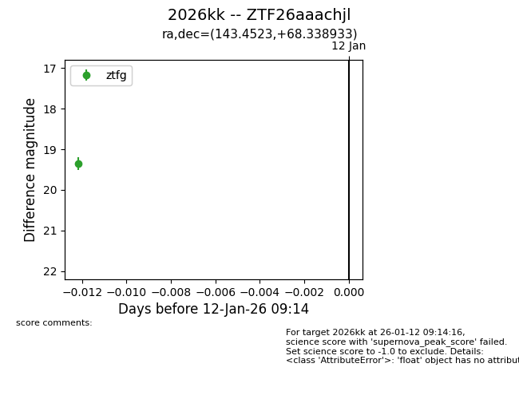
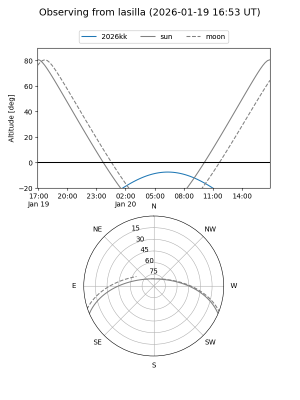
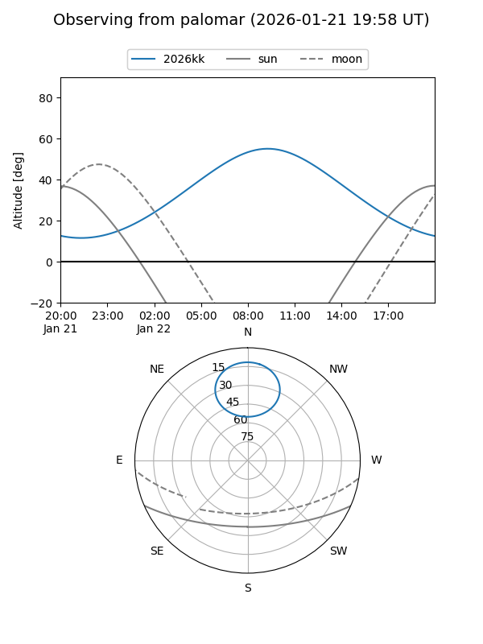
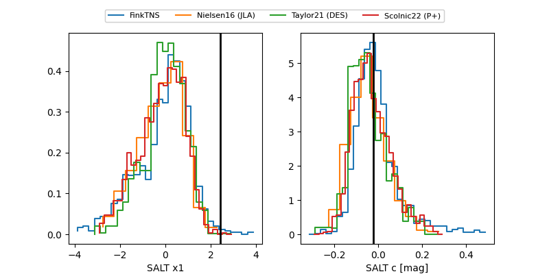

2026kk
Target 2026kk at 2026-01-14 10:30
Aliases and brokers:
FINK: link
Lasair: link
ALeRCE: link
TNS: link
YSE: link
alt names
ZTF26aaachjl (ztf,fink_ztf)
2026kk (tns,yse)
Coordinates:
equatorial (ra, dec) = 143.4523,+68.33893
equatorial (HMS+DMS) = 09:33:48.55,+68:20:20.16
galactic (l, b) = (144.2665,+39.60842)
Flags:
Photometry:
last ztfg=19.35, ztfr=19.49
1 ztfg, 1 ztfr detections
Lightcurve

Visibility


Additional plots
